Guided tour of OSBv2
Contents
Guided tour of OSBv2#
This guide provides a quick tour through the main features of the OSBv2 platform, using the contents of the OSBv2 showcase repository.
1) Register & sign in to OSBv2#
To create and open the workspaces mentioned below, you need to have an OSBv2 account (OSBv1 username/password will not work…). To register for a free OSBv2 user account head to OSBv2 and click on “Sign in” in the top right hand corner.
{kind=link}
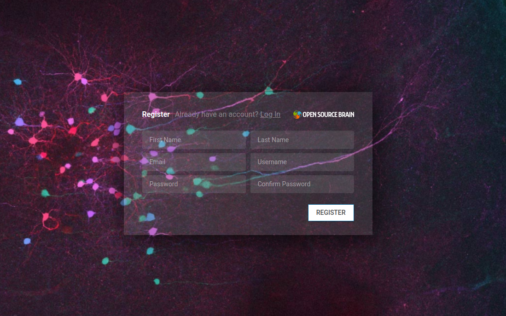
Fig. 18 Register on OSBv2#
More details on OSBv2 user accounts (file storage, quotas, etc.) can be found here.
2) Create a new workspace#
We will now create a workspace which will hold files which can be viewed and analysed in our OSBv2 applications.
This workspace will be a copy of a repository, OSBv2 Showcase which contains a number of file types supported by OSBv2.
Go to the repository page at https://www.v2.opensourcebrain.org/repositories/38 to see the current contents of this repository.
{kind=link}
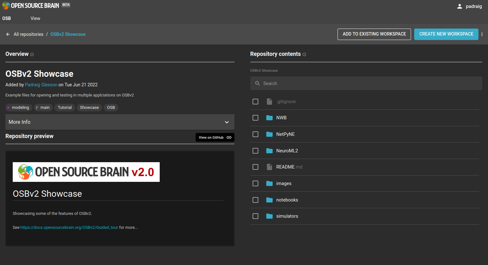
Fig. 19 Create a new workspace from the OSBv2 Showcase repository#
As you can see there is a link to the source of the files on GitHub, https://github.com/OpenSourceBrain/OSBv2_Showcase. Any additions/changes to GitHub will be reflected in the view of it on the OSB repository page.
To create the new workspace, click on the blue button CREATE NEW WORKSPACE. The dialogue that opens allows you to set the title and tags, etc. to associate with the workspace, to make it easier to find.
{kind=link}
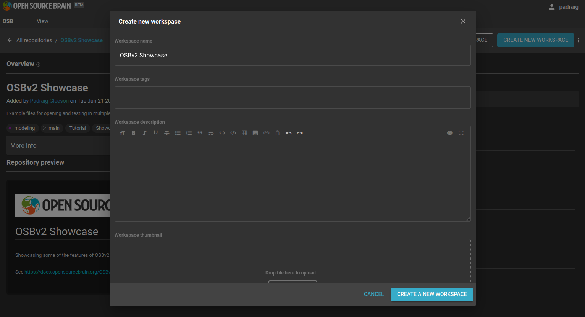
Fig. 20 Workspace creation dialogue#
After it is created, you will get an option to GO TO WORKSPACE. Go here and you get a view of the workspace with a number of options in the top right corner on how to proceed.
{kind=link}
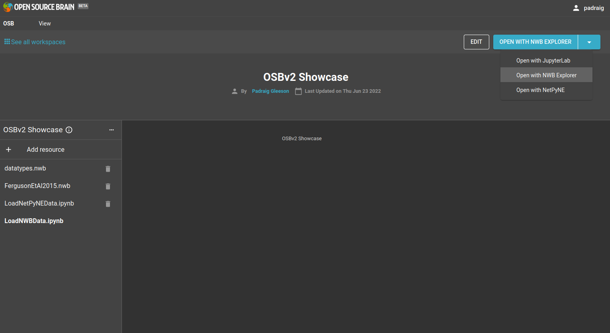
Fig. 21 Options for opening the workspace can be found in the top right corner#
3) Explore NWB datasets#
Select Open with NWB Explorer in the drop down menu and click the blue button. The NWB Explorer interface will open.
{kind=link}
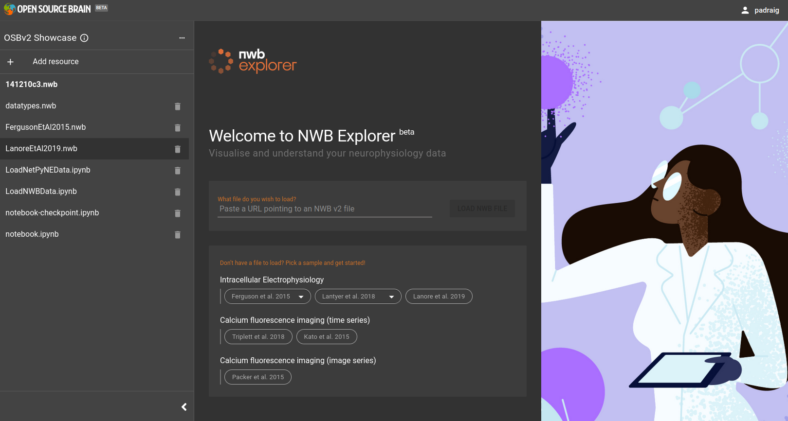
Fig. 22 NWB Explorer main interface. Note the Resources panel on the left (with the list of NWB files etc.) can be opened/closed with the arrows (>, <) at the bottom of the panel.#
The column on the left lists a number of the files of known types (e.g. NWB files, Python notebooks). Select LanoreEtAl2019.nwb in this column, and that NWB file will be loaded in to the NWB Explorer interface.
This dataset contains electrophysiological recordings of Golgi cells from the cerebellum. The left hand column below gives general information on the data set extracted fro the metadata of the NWB file. The study examined the spiking behaviour under different conditions: 1) prior to application of a drug norepinephrine, 2) following application of the drug, and 3) after wash out of the drug from the brain slices. The top right panel, Acquisition shows the acquired data, membrane potential traces, under these conditions. Typing Prior into the text box on the top right selects just the traces prior to application of the drug. Pressing the eye (👁) beside one of the individual traces will plot that trace, or the one at the bottom with “41 Matching results” will plot all of these in one figure. Similar traces for the currents injected during these trials can be found under Stimulus.
{kind=link}
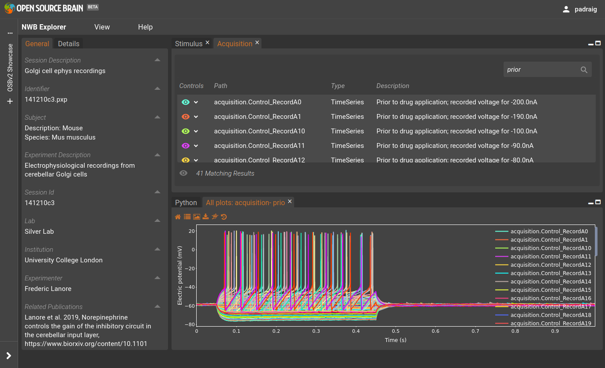
Fig. 23 NWB Explorer view of Lanore et al. 2019 dataset.#
4) Create a network simulation using NetPyNE#
Now open the same workspace in NetPyNE. To do this you can either go back to the homepage (e.g. click on the OSB logo in the top left corner) and find the link to the workspace page, or from a workspace open in another application, click the 3 dots (…) at the top of the Resources panel on the left, and select: Open with NetPyNE.
The interface below should be displayed after NetPyNE opens.
{kind=link}
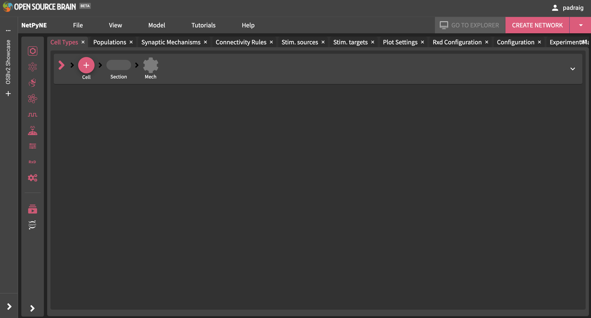
Fig. 24 NetPyNE interface before a model is loaded/created.#
There is a simple example network included in the OSBv2 repo. To open this, select menu item File -> Open… and locate the JSON file at /home/jovyan/netpyne/workspace/OSBv2 Showcase/main/NetPyNE/HHTut/HHTut_data.json (or paste this path into the top text field in the dialog)
{kind=link}
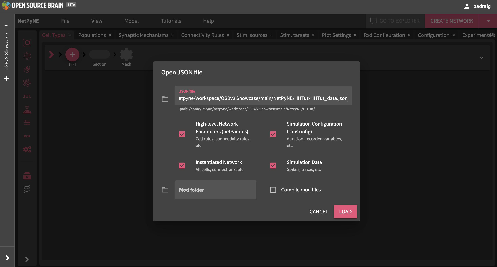
Fig. 25 Loading a JSON file.#
After the model has loaded, you can explore the settings, e.g. click on Populations tab and then PYR, and you will see that this is a population of 20 cells:
{kind=link}
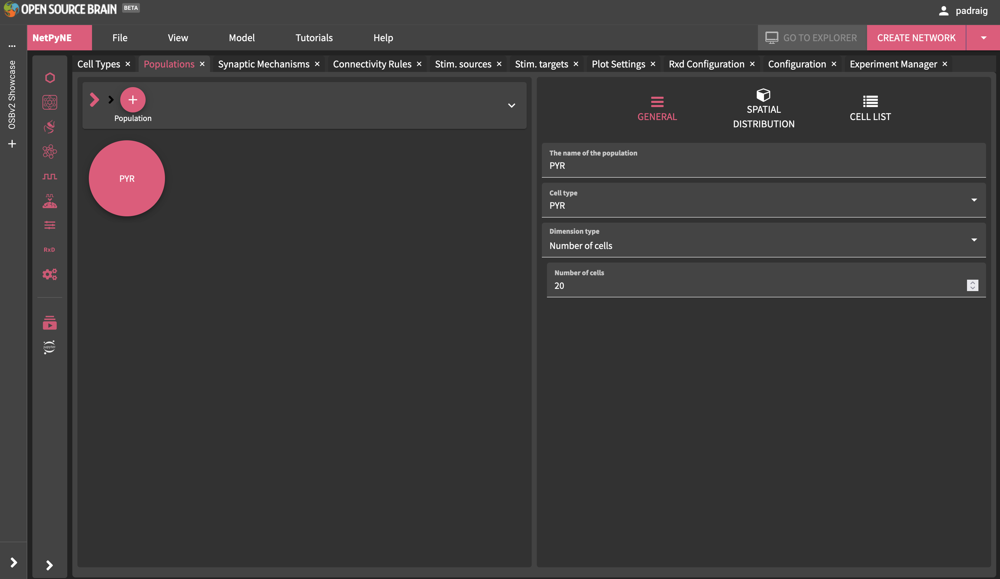
Fig. 26 Viewing the population present.#
Next, try viewing in 3D (Click CREATE NETWORK on the top right) and you will see the view on the left below.
The network can be executed also (Click SIMULATE on the top right). To view one of the recorded membrane traces, press the icon on the left for Cell Traces and the plot on the right will appear.
{kind=link}
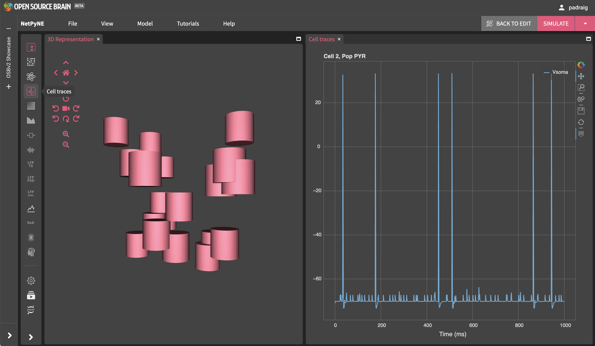
Fig. 27 After creating and simulating the model.#
5) Open notebooks in JupyterLab#
5a) NWB data loading#
Next, open the same workspace in JupyterLab (again click the 3 dots (…), or go to the homepage).
On the left as shown below is the File browser, which contains all the files copied in from the OSBv2 Showcase GitHub repository. On the right is the Launcher, where you can create new files of various types, or open a Terminal to enter shell commands. A new Launcher can always be created by pressing the big blue button with the +.
{kind=link}
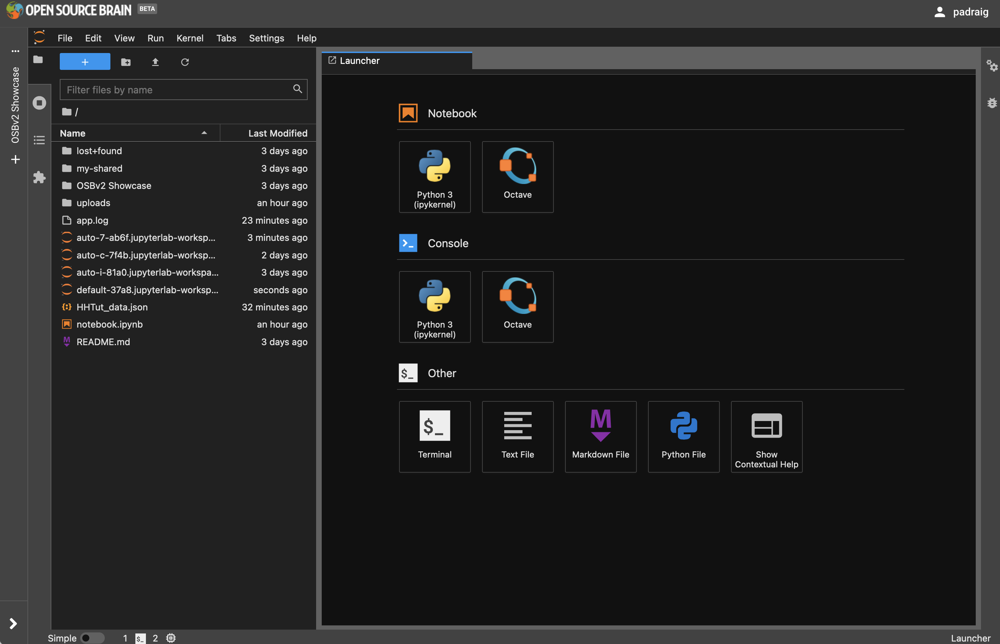
Fig. 28 Main interface of JupyterLab.#
The image below shows some of the interfaces and file types which are supported by JupyterLab. The top left of the 4 panels is a command line Terminal for running commands and executing scripts, top right is a preview of a Markdown file (which can also be modified in a text editor), bottom left is a Python script, and bottom right is a JSON file. It also illustrates the lighter version of the JupyterLab interface, which can be accessed in the menu: Settings -> Theme -> JupyterLab Light.
{kind=link}
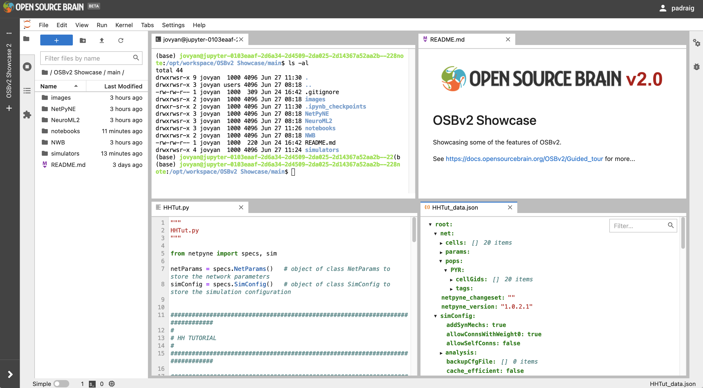
Fig. 29 Interface of JupyterLab (in light theme) showing the Terminal and viewing Markdown and JSON files, and a Python script.#
Navigate to OSBv2 Showcase/main/notebooks and double click on LoadNWBData.ipynb. This opens a notebook which an be used to programatically read the contents of the NWB file previously visualised in NWB Explorer, LanoreEtAl2019.nwb. It uses pyNWB to load in the file, and selects the entries in nwbfile.acquisition which match “Control”, i.e. the recordings prior to applying the drug, and plots these.
To rerun the notebook, press the double arrow (▶▶) (to the left of Code) in the icon bar on the notebook panel.
{kind=link}
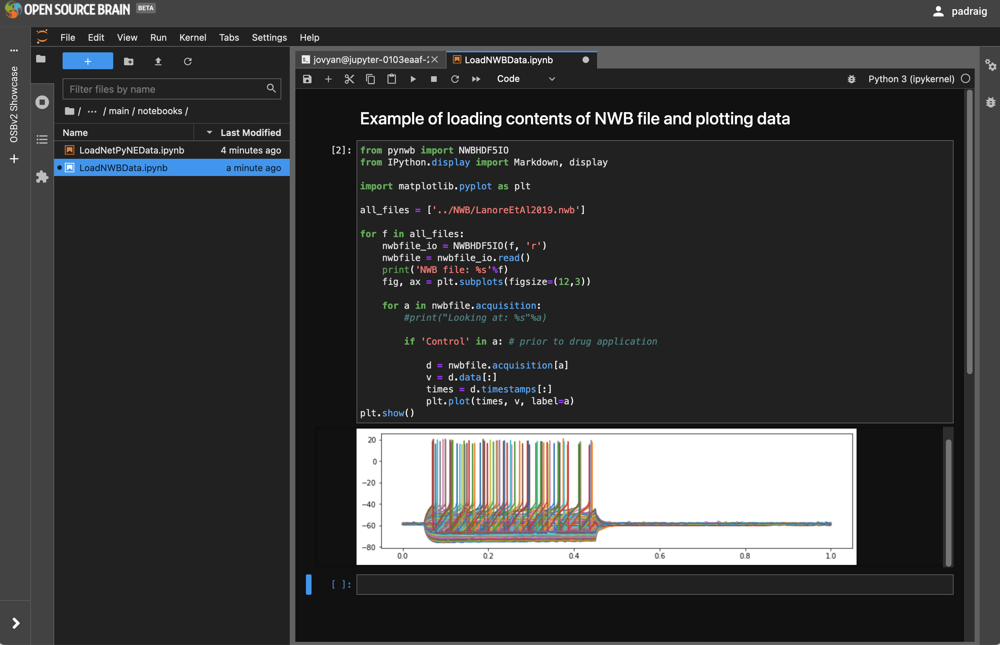
Fig. 30 Notebook for loading NWB data.#
5b) NetPyNE simulation results loading#
Again in directory OSBv2 Showcase/main/notebooks open LoadNetPyNEData.ipynb, which looks for a file generated when the NetPyNE simulation above was run (in directory ../NetPyNE/HHTut/HHTut_data.json), and extracts the saved membrane potential trace from this.
{kind=link}
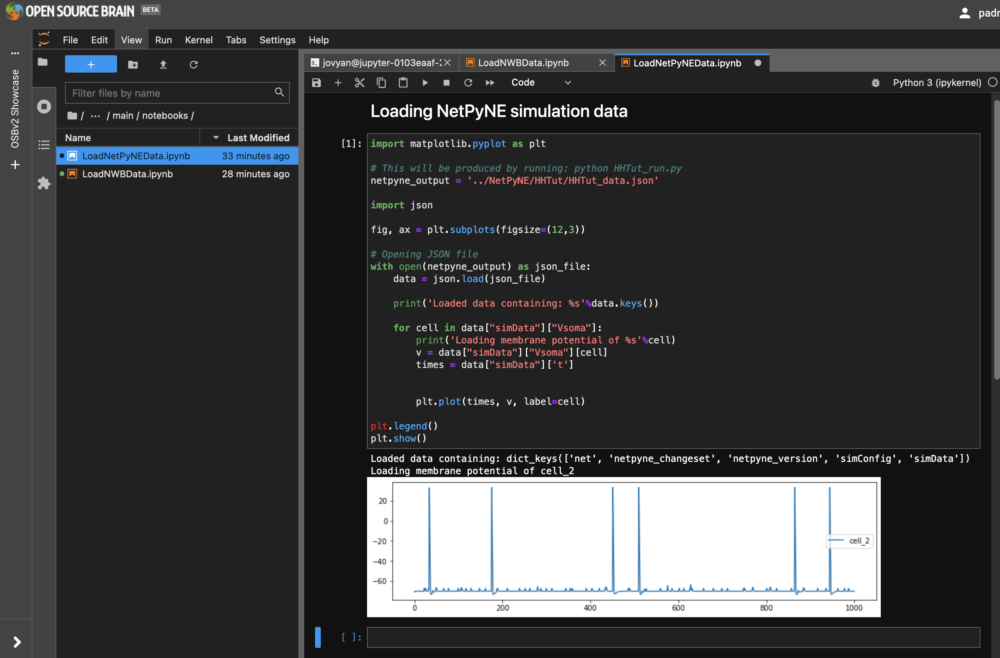
Fig. 31 Notebook for loading NetPyNE data.#
6) Run simulator scripts in JupyterLab#
6a) Run NetPyNE scripts#
Next try running some simulator scripts in the terminal. Open a Terminal from the Launcher (big blue button with +), and cd to /opt/workspace/OSBv2 Showcase/main/NetPyNE/HHTut. Type python HHTut_run.py to run the same simulation you ran through the graphical interface.
{kind=link}
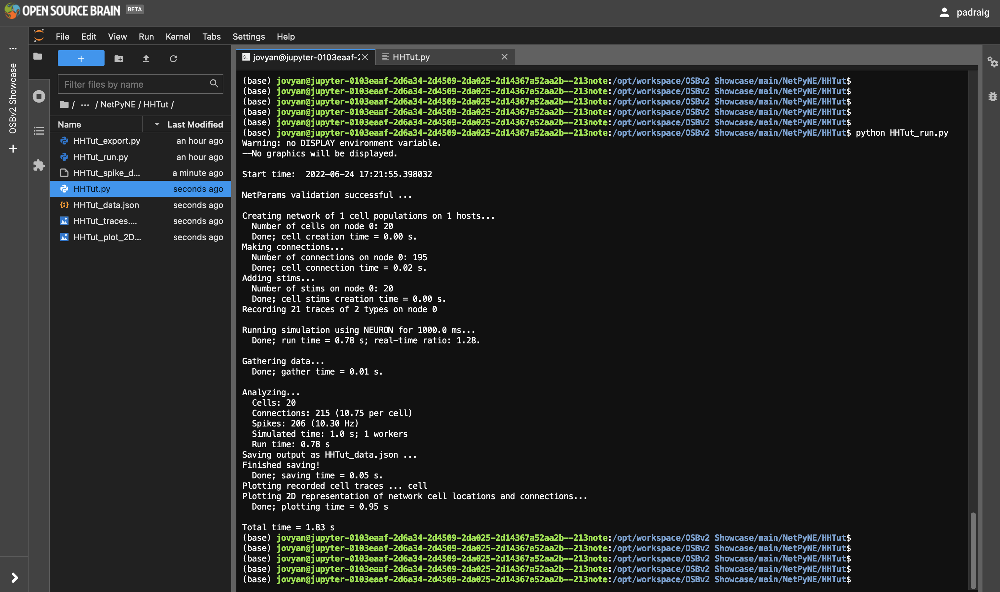
Fig. 32 Running NetPyNE simulation in the Terminal#
6a) Run Brian, EDEN, … scripts#
A number of scripts for other simulators which are pre installed on OSBv2 can be found in /opt/workspace/OSBv2 Showcase/main/simulators. Go to this location in the terminal and try running these, e.g. brian2_example.py.
{kind=link}
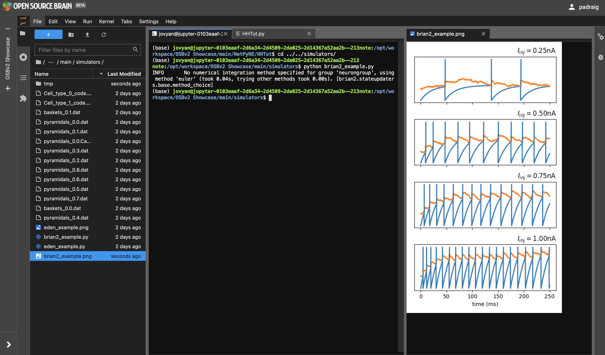
Fig. 33 Running Brian simulation in the Terminal#
Another example included demonstrates how to create a simple network in Arbor.
{kind=link}
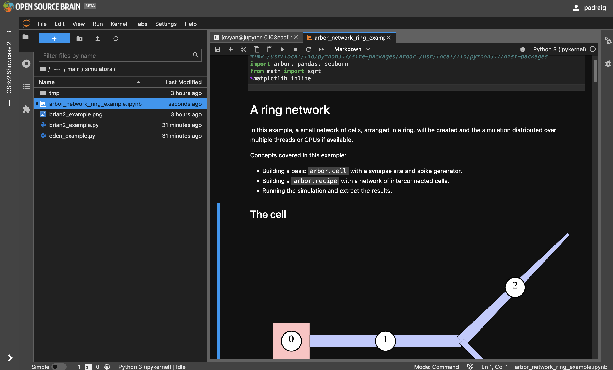
Fig. 34 Running an Arbor simulation in a notebook#